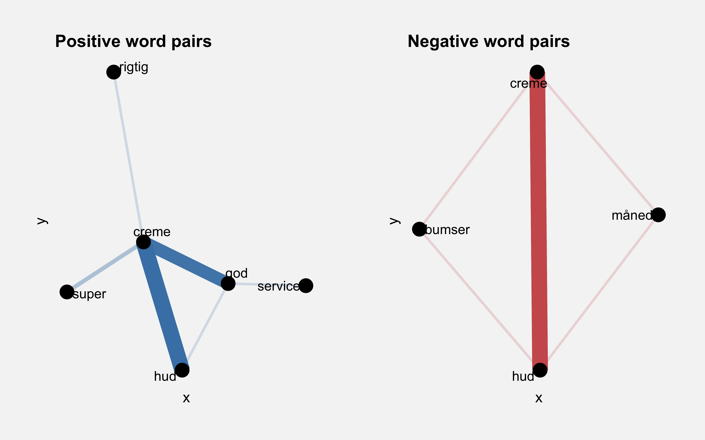

Introduction
In this analysis I am gonna scapes truspilot web page for reviews given
by customer for the skincare firm Nøie.
Here I am gonna use the data to make some topic modelling.
Web scraping
For sciping the trutpilot
site
I am gonna make three functions:
get_ratings
get_reviews
get_reviewer_names
and combine it into a tibble with get_data to extract the data.
get_ratings <- function(html) {
html %>%
read_html() %>%
html_nodes("body") %>%
html_nodes(".star-rating") %>%
as.character() %>%
str_subset("medium") %>%
str_extract("(\\d stjerne)") %>%
str_remove(("( stjerne)")) %>%
unlist()
}
get_reviews <- function(html) {
html %>%
read_html() %>%
html_nodes(".review-content__body") %>%
html_text() %>%
str_trim() %>%
unlist()
}
get_reviewer_names <- function(html) {
html %>%
read_html() %>%
html_nodes(".consumer-information__name") %>%
html_text() %>%
str_trim() %>%
unlist()
}
get_data <- function(html) {
review <- get_reviews(html)
names <- get_reviewer_names(html)
ratings <- get_ratings(html)
data <- tibble(
reviewer = names,
rating = ratings,
review = review
)
data
}
urls <- cbind(c(url1, url2, url3, url4, url5, url6, url7))
url_list <- map(urls, get_data) %>%
as.list()
data <- do.call(bind_rows, url_list)
Let us quick take a look at what I have extracted from the site:
data %>%
head()
## # A tibble: 6 x 3
## reviewer rating review
## <chr> <chr> <chr>
## 1 Lars Jensen 5 "Gode produkter og super service. Skru ned for…
## 2 Maria Cirkeline Rasmin… 5 "Super produkter\n \n \n…
## 3 Lis 1 "2 cremer gav endnu mere uren hud + ulovlig ma…
## 4 Trine Holm 5 "Min hud slår altid ud om vinteren.\n …
## 5 Camilla 1 "Min hud er værre end nogensinde\n …
## 6 Andrea Broe 5 "Stor anbefaling\n \n \n…
We see the following information:
reviewer that is the person that has used the product.rating what the the reviewer has chosen to give the product on a
scale from 1-5.review is the comment given by the reviewer and the central aspect
for this analysis.
In the next section I will drewll into into the preprocessig step for
this text mining task.
Loading and preparing the data
From the data we can see that the reviews are in Danish. Here we can use
the happyorsad package to compute a sentiment score for each review.
Thease score are based on a Danish list of sentiment words and put
toheather by Finn Årup
Nielsen
df <-
data %>%
mutate(sentiment = map_int(review, happyorsad, "da")) %>%
mutate(review = tolower(review)) %>%
mutate(
review = removeWords(
review,
c(
"så", "lidt", "virkelig",
"virkelig", "fuldstændig", "helt", "mere",
"kan", "få", "får", "fik", "nøie",
"altså", "gav", "endnu",
"sagde", "ingen", "flere",
stopwords("danish")
)
),
review = removeNumbers(review)
)
Distribution of sentiment scores
In the density plot we see how sentiment scores are distributed with a
median score of 2. This a really good score and it is of interst to find
out why Nøie has a this great score and it also svore 4.5 rating out
of 5.
df %>%
ggplot(aes(x = sentiment)) +
geom_density(size = 1) +
geom_vline(
xintercept = median(df$sentiment),
colour = "indianred", linetype = "dashed", size = 1
) +
ggplot2::annotate("text",
x = 15, y = 0.06,
label = paste("median = ", median(df$sentiment)), colour = "indianred"
) +
my_theme() +
xlim(-40, 40)

In a crude way we can put positive and negative reviews in separate data
frames perform topic modelling on each in order to explore what
reviewers lik and dislike.
Topic modelling for positive reviews
df_pos <-
df %>%
filter(sentiment > 1) %>%
unnest_tokens(word, review) %>%
mutate(word = str_replace(word, "cremen", "creme")) %>%
mutate(word = str_replace(word, "cremer", "creme")) %>%
mutate(word = str_replace(word, "cremejeg", "creme")) %>%
mutate(word = str_replace(word, "cremene", "creme"))
Before creating a so called document term matrix we need to count
the frequency of each word per document.
words_pos <- df_pos %>%
count(reviewer, word, sort = TRUE) %>%
ungroup()
We want to use the famouse Latent Dirichlet Allocation algorithme for
topic modelling. To use this we need to create our DTM and here we use
tidytext function cast_dtm to do that.
reviewDTM_pos <- words_pos %>%
cast_dtm(reviewer, word, n)
LDA assumes that every document is a mixture of topics, and every topic
is a mixture of words. The k argument is used to specify the desired
amount of topics that we want in our model. Let´s create a two-topic
mode.
reviewLDA_pos <- LDA(reviewDTM_pos, k = 2, control = list(seed = 123))
The following table shows how many reviews that are assigned to each
topic
tibble(topics(reviewLDA_pos)) %>%
group_by(`topics(reviewLDA_pos)`) %>%
count() %>%
kable() %>%
kable_styling(
full_width = FALSE,
position = "left"
)
|
topics(reviewLDA_pos)
|
n
|
|
1
|
52
|
|
2
|
57
|
It is also possible to get the per-topic word probabilities or ‘beta’
topics_pos <- tidy(reviewLDA_pos, matrix = "beta")
Now we can find the words with the highest beta. Here we choose the top
five words which we will show in a plot.
top_terms_pos <- topics_pos %>%
group_by(topic) %>%
top_n(5, beta) %>%
ungroup() %>%
arrange(topic, -beta) %>%
mutate(order = rev(row_number()))
Topic modelling for negative reviews
Let us see what can be said regarding the negativ reviews where the
sentiment score is below -1
df_neg <-
df %>%
filter(sentiment < -1) %>%
unnest_tokens(word, review) %>%
mutate(word = str_replace(word, "cremen", "creme")) %>%
mutate(word = str_replace(word, "cremer", "creme")) %>%
mutate(word = str_replace(word, "cremejeg", "creme")) %>%
mutate(word = str_replace(word, "cremene", "creme"))
words_neg <- df_neg %>%
count(reviewer, word, sort = TRUE) %>%
ungroup()
reviewDTM_neg <- words_neg %>%
cast_dtm(reviewer, word, n)
reviewLDA_neg <- LDA(reviewDTM_neg, k = 2, control = list(seed = 347))
tibble(topics(reviewLDA_neg)) %>%
group_by(`topics(reviewLDA_neg)`) %>%
count() %>%
kable() %>%
kable_styling(full_width = F, position = "left")
|
topics(reviewLDA_neg)
|
n
|
|
1
|
2
|
|
2
|
4
|
topics_neg <- tidy(reviewLDA_neg, matrix = "beta")
topTerms_neg <- topics_neg %>%
group_by(topic) %>%
top_n(5, beta) %>%
ungroup() %>%
arrange(topic, -beta) %>%
mutate(order = rev(row_number()))
Plotting the topic models
Now what the models are on made we can make a plot to make a comparison.
plot_pos <-
top_terms_pos %>%
ggplot(aes(order, beta)) +
ggtitle("Positive review topics") +
geom_col(show.legend = FALSE, fill = "steelblue") +
scale_x_continuous(
breaks = top_terms_pos$order,
labels = top_terms_pos$term,
expand = c(0, 0)
) +
facet_wrap(~topic, scales = "free") +
coord_flip(ylim = c(0, 0.02)) +
my_theme() +
theme(axis.title = element_blank())
plot_neg <- topTerms_neg %>%
ggplot(aes(order, beta, fill = factor(topic))) +
ggtitle("Negative review topics") +
geom_col(show.legend = FALSE, fill = "indianred") +
scale_x_continuous(
breaks = topTerms_neg$order,
labels = topTerms_neg$term,
expand = c(0, 0)
) +
facet_wrap(~topic, scales = "free") +
coord_flip(ylim = c(0, 0.02)) +
my_theme() +
theme(axis.title = element_blank())
grid.arrange(plot_pos, plot_neg, ncol = 1)

Word co-occurrence within reviews
To see whether word paris like “bad creame” and “good creme” are
frequent in the data sets, we´ll count how many times each pair of words
occurs togeather in a title or description field. This can easy be done
with pairwise_count() function.
word_pairs_pos <- df_pos %>%
pairwise_count(word, reviewer, sort = TRUE)
word_pairs_neg <- df_neg %>%
pairwise_count(word, reviewer, sort = TRUE)
We can then plot the most common word pairs co-occurring in the reviews
by means of the igraph and ggraph packages.
pair_wise_helper <- function(data, title, color) {
data %>%
graph_from_data_frame() %>%
ggraph(layout = "fr") +
geom_edge_link(aes(edge_alpha = n, edge_width = n), edge_colour = color) +
ggtitle(title) +
geom_node_point(size = 5) +
geom_node_text(aes(label = name),
repel = TRUE,
point.padding = unit(0.2, "lines")
) +
my_theme() +
theme(
axis.title = element_blank(),
axis.text = element_blank(),
axis.ticks = element_blank()
)
}
pairs_plot_pos <-
pair_wise_helper(
word_pairs_pos %>% filter(n >= 15),
"Positive word pairs",
"steelblue"
)
pairs_plot_neg <-
pair_wise_helper(
word_pairs_neg %>% filter(n > 2),
"Negative word pairs",
"indianred"
)
grid.arrange(pairs_plot_pos, pairs_plot_neg, ncol = 2)

Word pair correlations
Aanother interesting idea is to measure the correlation for specific
words. Here I only look at the positiv dataset because there are to few
observation in the negative one.
As an alternative idea is to perform an n-gram analysis to find out
which words most frequently are used.
cor_pos <-
df_pos %>%
group_by(word) %>%
filter(n() >= 10) %>%
pairwise_cor(word, reviewer, sort = TRUE) %>%
filter(item1 == "creme") %>%
top_n(7) %>%
mutate(
item1 = as.factor(item1),
order = rev(row_number())
)
cor_pos %>%
ggplot(aes(x = order, y = correlation, fill = item1)) +
geom_col(show.legend = FALSE) +
scale_x_continuous(
breaks = cor_pos$order,
labels = cor_pos$item2,
expand = c(0, 0)
) +
scale_fill_manual(values = c("steelblue", "indianred")) +
coord_flip() +
labs(x = "words") +
my_theme()

The analysis confirm that Nøie has a very high custumer satisfication.
The customer are describing the producted to delivered what they want
and the service is very satisfiying.